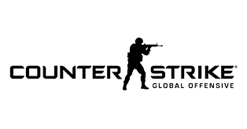

Counter-Strike:GO
Roster:Freddy Johansson (Support)
Jesper Wecksell (AWPer)
Richard Landström (Support)
Simon Eliasson (Rifler/AWPer)
Ludwig Brolin (Rifler/AWPer)
Jimmy Berndtsson(Coatch)

League of legends
Bwipo(Top)
Broxah(Jungler)
Nemesis(Mid)
Rekkles(Bottom)
Hylissang(Support)

Dota 2
MP
Abded
iceiceice
DJ
Jabz